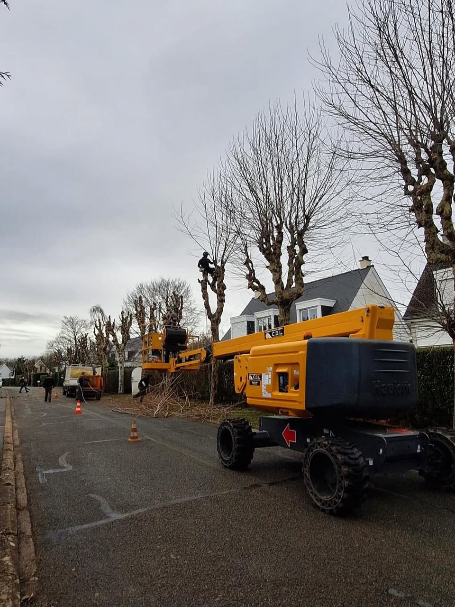

Taille douce et d’entretien
Suppression du bois mort et des branches mal placées, éclaircie de la couronne pour laisser passer la lumière.
Élagage · Abattage · Dessouchage
Un arbre bien taillé vit plus longtemps, résiste mieux au vent et cesse de gêner. Quand il doit tomber, on le démonte proprement — morceau par morceau s’il le faut.

Nos interventions
Suppression du bois mort et des branches mal placées, éclaircie de la couronne pour laisser passer la lumière.
Réduire un houppier devenu trop volumineux, dégager une toiture, une gouttière, une façade ou une vue.
Pour les grands arbres et les alignements, la nacelle permet d’intervenir vite, en sécurité, sans abîmer l’arbre.
Abattage direct quand la place le permet, démontage pièce par pièce près d’une maison ou d’une clôture.
La souche est rognée sous le niveau du sol pour replanter, engazonner ou circuler librement.
Branches broyées, grumes évacuées avec un engin compact, même dans les zones difficiles d’accès.

Élagage raisonné
Un étêtage ou une coupe trop sévère affaiblit l’arbre : il repousse en désordre, devient fragile et finit souvent par coûter plus cher.
Nous privilégions une taille adaptée à l’essence, à l’âge et à l’environnement de chaque arbre, pour qu’il garde sa forme naturelle et sa vigueur.
Pour qui ?
Un arbre qui gêne, une haie trop haute, un jardin à remettre d’aplomb : nous intervenons chez vous, du petit jardin au grand terrain.
Entretien périodique des arbres d’une résidence : par exemple, une centaine d’arbres taillés en nacelle tous les deux ans.
Espaces verts de locaux professionnels, grandes surfaces à tondre, contrats d’entretien à l’année.

Abattage et dessouchage
Arbre mort, malade, dangereux ou simplement trop proche de la maison : l’abattage est parfois la bonne décision.
Avant toute coupe, nous évaluons l’espace disponible, les obstacles et la direction de chute. Selon la situation, l’arbre est abattu d’un seul tenant ou démonté par sections.
Bon à savoir
Branche cassée, arbre penché, racines soulevées ? Ne prenez pas de risque et ne montez pas dans l’arbre : appelez-nous pour un diagnostic et une mise en sécurité.
Déroulement
Vous nous décrivez l’arbre, sa hauteur approximative et ce qui vous gêne.
Nous évaluons l’arbre, l’accès et les contraintes, puis vous conseillons.
Prestations, évacuation des déchets, délais : tout est écrit noir sur blanc.
Le jour convenu, nous intervenons en sécurité et laissons le terrain propre.
Questions fréquentes
En règle générale, de la fin de l’automne à la fin de l’hiver, quand l’arbre est au repos et en dehors des périodes de gel. Certaines tailles douces se pratiquent aussi en été.
Nous évitons autant que possible le printemps, période de nidification des oiseaux.
Tout dépend de la hauteur de l’arbre, de son accessibilité, de la proximité des habitations et du volume de déchets à évacuer. C’est pourquoi nous nous déplaçons pour établir un devis précis et gratuit.
Les branches sont broyées et évacuées. Le bois de bon diamètre peut être coupé en bûches et laissé sur place si vous le souhaitez.
L’article 673 du Code civil permet d’exiger de votre voisin qu’il coupe les branches qui avancent sur votre terrain, mais vous ne pouvez pas les couper vous-même. Les racines et ronces, en revanche, peuvent être coupées à la limite de propriété.
Dans la plupart des jardins privés, non. Mais certains arbres sont protégés par le plan local d’urbanisme (espace boisé classé, arbre remarquable). Un passage en mairie ou la consultation du PLU permet de lever le doute avant les travaux.
Une visite suffit souvent à y voir clair. Appelez-nous ou envoyez-nous quelques photos : nous vous répondons rapidement.